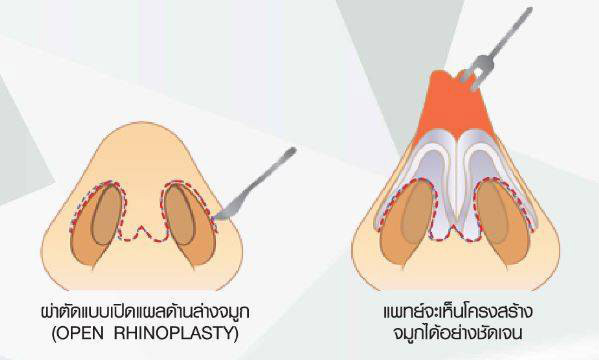
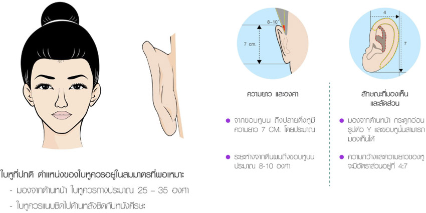
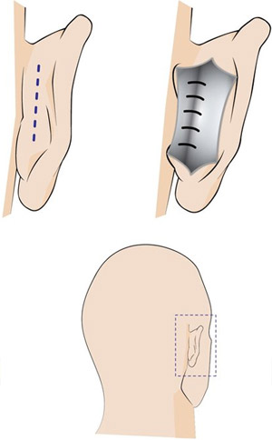
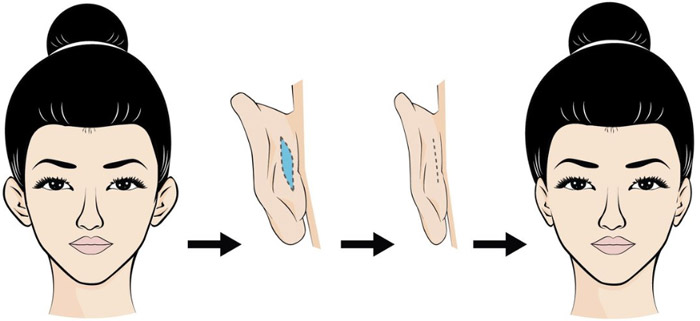
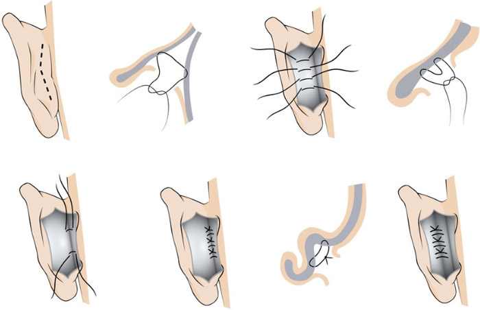
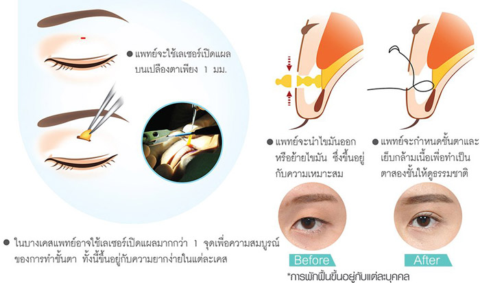
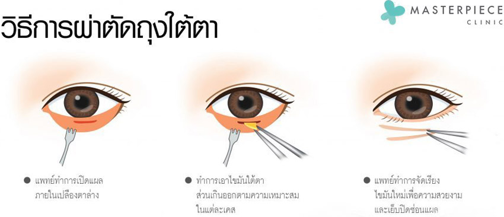

ปัจจุบันผู้หญิงได้ให้ความสำคัญกับรูปร่างมากขึ้น การเสริมหน้าอก จึงเป็นศัลยกรรมอันดับต้นๆ ที่ผู้หญิงหลายคนเลือกทำ เพื่อช่วยให้รูปร่างได้สัดส่วนมากขึ้นเพราะมีส่วนโค้งส่วนเว้า และง่ายต่อการแต่งตัว เนื่องจากหน้าอกก็เป็นอวัยวะส่วนหนึ่งที่แสดงความเป็นตัวตนของเพศหญิงได้ชัดเจน ปัจจุบันการแพทย์ด้านศัลยกรรมความงามได้พัฒนาขึ้นอย่างต่อเนื่อง จึงทำให้ศัลยกรรมเสริมหน้าอก ทำนมเป็นที่นิยมไม่น้อยไปกว่าการศัลยกรรมตกแต่งใบหน้าเลยทีเดียว
การเสริมหน้าอก (ทำนม) โดยใช้ถุงเต้านมเทียม (Breast implant) ทางเมดิควีนส์คลินิกเลือกใช้ของยี่ห้อจากอเมริกา ได้แก่ Mentor โดยเป็นซิลิโคนที่ศัลยแพทย์เชื่อมั่นว่าดีที่สุดสำหรับการเสริมหน้าอก ซึ่งปัจจุบันนิยมใช้เป็นซิลิโคนแบบเจลแทนถุงน้ำเกลือเนื่องจากมีความปลอดภัยไม่เสี่ยงรั่วซึมในอนาคต สำหรับการผ่าตัดจะเป็นการวางยาสลบด้วยวิสัญญีแพทย์เฉพาะทาง
รีวิว Q&A (1)
 5/5
5/5
คำถามเกี่ยวกับศัลยกรรมหน้าอก Q&A (2)
ดูดไขมัน เป็นวิธีการหนึ่งที่ช่วยให้รูปร่างดูดีและได้สัดส่วนมากขึ้น ช่วยแก้ไขปัญหาสำหรับคนที่มีไขมันส่วนเกิน ต้องการลดสัดส่วนเฉพาะจุด ไม่เหมาะสำหรับผู้ที่ต้องการลดน้ำหนัก เพราะการดูดไขมันไม่ใช่การลดน้ำหนักแต่เป็นการสลายไขมันส่วนเกินที่มีอยู่ในร่างกายบริเวณจุดต่างๆ ออกไปทำให้รูปร่างมีสัดส่วนมากขึ้น
Vaser Liposuction คือเทคนิคกรรมวิธีการดูดไขมันโดยการใช้พลังงานคลื่นอัลตร้าซาวด์ (Ultrasound) เข้าไปสลายไขมันทำให้ก้อนไขมันแตกตัวออกและสลายกลายเป็นของเหลวใต้ผิวหนัง จากนั้นทำการดูดออกอย่างนุ่มนวลและง่ายดาย โดยไม่ทำความเสียหายให้กับเนื้อเยื่อโดยรอบ เช่น เส้นเลือด เส้นประสาท และเนื้อเยื่อเกี่ยวพันต่างๆ ดังนั้นจึงมีความบอบช้ำน้อย มีการฟื้นตัวเร็วหลังการรักษาทำให้สามารถกำจัดไขมันส่วนเกินได้เป็นอย่างดี คลื่นอัลตร้าซาวด์นั้นเป็นคลื่นพลังงานที่มีความปลอดภัยสูง และเป็นที่รู้จักกันมานานหลายปีทั้งในเรื่องความงามและการรักษาโรค ล่าสุดคือการนำมาใช้กำจัดไขมันส่วนเกิน
การดูดไขมัน ด้วยเทคนิค Vaser Liposuction ได้รับการยอมรับและเป็นที่นิยมอย่างมากในประเทศสหรัฐอเมริกาและทั่วโลก เนื่องจากมีประสิทธิภาพและความปลอดภัยสูงเป็นการปรับรูปร่างให้มีความสวยงาม สัดส่วนกระชับ และยังทำให้ผิวเรียบเนียนขึ้น ได้รับการรับรองจาก US FDA สามารถทำได้หลายส่วนของร่างกาย ไม่ว่าจะเป็นหน้าท้อง รอบเอว สะโพก ต้นขา ต้นแขน น่อง และปีกหลัง แต่การดูดไขมันได้อย่างมีประสิทธิภาพและความปลอดภัยนั้น ต้องประกอบไปด้วยปัจจัยร่วมกัน ทั้งแพทย์ผู้เชี่ยวชาญรวมถึงเครื่องมือที่ใช้ต้องได้มาตรฐาน ข้อดีของการดูดไขมัน
- การดูดไขมันสามารถลดไขมันส่วนเกินเฉพาะบริเวณที่ต้องการได้
- การทำ Vaser Liposuction นั้นมีความปลอดภัยสูง
- การทำ Vaser Liposuction ใช้พลังงานคลื่นเสียงความถี่ เข้าไปสลายไขมันดูดไขมันที่แตกตัว ให้กลายเป็นของเหลวออกมา โดยที่เส้นเลือดเซลล์ประสาทและเนื้อเยื่อเซลล์รอบข้างได้รับความเสียหายน้อยที่สุด
- หลังการทำ คนไข้สามารถฟื้นตัวได้เร็ว แผลหายได้รวดเร็วและมีรอยช้ำน้อยมาก โอกาสที่คนไข้จะเสี่ยงกับการติดเชื้อหรือแทรกซ้อนมีน้อย คนไข้สามารถกลับไปใช้ชีวิตประจำวันได้ภายใน 1 วัน
- หลังการทำจะเห็นผลเร็วและชัดเจน คนไข้จะไม่มีปัญหาในเรื่องของผิวเป็นโพรงซึ่งทำให้เกิดผิวเปลือกส้ม เพราะการทำ Vaser Liposuction เนื้อเยื่อคอลลาเจนที่พยุงผิวไม่ได้ถูกทำลายไปด้วย
รีวิว Q&A (1)
5/5
คำถามเกี่ยวกับการดูดไขมัน Q&A (2)
การเสริมจมูก (Rhinoplasty) นับว่าเป็นการศัลยกรรมที่ได้รับความนิยมอันดับต้นๆ ของคนเอเชีย และโดยเฉพาะคนไทยเองที่นิยมทำจมูกกันอย่างมาก เนื่องจากช่วยสร้างความมั่นใจและบุคลิกภาพให้ดูดี โครงหน้าดูมีมิติมากขึ้น
เสริมจมูกซิลิโคน (Close Rhinoplasty)การเสริมจมูกด้วยการผ่าตัดแบบธรรมดา (Close Rhinoplasty) โดยแพทย์จะใช้วัสดุสังเคราะห์ในการเสริมจมูก (ทำจมูก) เช่น ซิลิโคน ซึ่งจะผ่าตัดสอดเข้าไปตามรอยแผลผ่าตัดเล็กๆ ภายในช่องจมูก เป็นเทคนิคที่ทำได้ง่ายและสะดวกใช้เวลาผ่าตัดไม่นานเหมาะกับกรณีที่คนไข้มีรูปทรงจมูกของเดิมที่ดีอยู่แล้วระดับหนึ่ง เช่น ฐานจมูกไม่ใหญ่จนเกินไป สันจมูกไม่แบบเรียบมากเกินไป รูปทรงจมูกไม่เบี้ยวและยาวหรือสั้นเกินไป เพราะหากจมูกมีความยาวที่เหมาะสมก็สามารถเสริมได้ด้วยซิลิโคน แต่มีข้อจำกัดคือไม่เหมาะกับผู้ที่มีจมูกสั้น (Short Nose)
ข้อดี
เป็นเทคนิคการผ่าตัดที่ไม่ซับซ้อนมาก เวลาผ่าตัดไม่นาน คนไข้ไม่จำเป็นต้องวางยาสลบ
เนื่องจากใช้วิธีการฉีดยาชาเฉพาะที่ ราคาไม่สูงมาก
ข้อเสีย
ไม่เหมาะกับผู้ที่มีจมูกสั้นมากเกินไป
ไม่สามารถปรับแก้โครงสร้างจมูกได้ทั้งหมดเนื่องจากเป็นการเปิดแผลในรูจมูกเพียงด้านใดด้านหนึ่งเท่านั้น
การเสริมจมูกด้วยการใช้กระดูกอ่อนหลังใบหู คืออีกหนึ่งเทคนิคที่ทางการแพทย์เลือกใช้ในการทำจมูก ในกรณีที่คนไข้ที่มีหนังปลายจมูกที่บางมาก เพราะหากใช้ซิลิโคนอย่างเดียวเพื่อเพิ่มปลายจมูก จะเสี่ยงต่อการทะลุได้ จึงต้องใช้กระดูกอ่อนหลังใบหูมาช่วยเสริมรองตำแหน่งปลายจมูกเอาไว้ ซึ่งการใช้กระดูกอ่อนหลังใบหูจะมีข้อดี คือไม่เป็นสารแปลกปลอม แต่ก็มีข้อจำกัดคือ ต้องเป็นผู้ที่โครงสร้างจมูกเดิมที่ค่อนข้างดีอยู่แล้วเพราะเป็นการผ่าตัดแบบ Close Rhinoplasty เปิดแผลในรูจมูกเพียงข้างใดข้างหนึ่ง จึงไม่สามารถปรับโครงสร้างอื่นๆ ภายในจมูกได้มาก หลังจากผ่าตัดแบบเสริมซิลิโคนและกระดูกหลังหูก็จะได้ทรงจมูกที่สวยงามขึ้น
ผู้ที่เหมาะกับเทคนิคนี้แพทย์จะเป็นผู้ประเมินก่อนตามปัญหาเดิมและข้อจำกัดของคนไข้ โดยการผ่าตัดจะต้องมีแผลสองที่คือรูจมูกด้านใดด้านหนึ่งและบริเวณหลังใบหู แพทย์จะให้วิธีการฉีดยาชาเฉพาะที่เพื่อระงับความเจ็บก่อนผ่าตัด
การเสริมจมูกแบบปรับโครงสร้างจมูก Nose Reconstructionเทคนิค Nose Reconstruction คือ การปรับโครงสร้างจมูกใหม่ ซึ่งสามารถปรับโครงสร้างจมูกทุกรูปแบบให้เป็นไปในแบบที่ต้องการได้ และเป็นเทคนิคที่นิยมมากที่สุดในประเทศเกาหลี เพราะจมูกจะดูสวยได้รูปอย่างเป็นธรรมชาติ โดยเทคนิคนี้จะใช้วิธีผ่าตัดเปิดแผลบริเวณฐานจมูก (Open Rhinoplasty) สามารถตกแต่งกระดูกฐานจมูกให้มีขนาดเล็กลง ผ่าตัดปรับรูปร่างปีกจมูกให้สวยงามและเข้ารูปขึ้น ปรับแต่งปลายจมูกให้ดูเรียวเล็ก
ซึ่งความพิเศษของเทคนิค Nose Reconstruction คือ การยืดปลายจมูกให้โด่งและพุ่งขึ้น ด้วย กระดูกอ่อนกลางจมูก (Septal cartilage) ซึ่งเป็นกระดูกตำแหน่งเดียวในร่างกายที่มีลักษณะแบน ตรง เรียบ และแข็งแรง โดยแพทย์จะผ่าตัดเอา กระดูกอ่อนกลางจมูก ออกมาเพียง 2 ใน 3 เพื่อใช้ในการเสริมบริเวณปลายจมูก (โดยไม่มีผลกระทบใดๆ ต่อร่างกายในภายหลัง) การใช้กระดูกอ่อนกลางจมูกจะช่วยยืดปลายจมูกให้เรียวยาว สร้างจมูกปลายหยดน้ำที่แท้จริง โดยไม่ต้องใช้การเสริมซิลิโคน เพราะช่วยปรับโครงสร้างจมูกได้จริงและดีที่สุดในขณะนี้
ส่วนบริเวณสันจมูกในบางเคสอาจไม่ต้องเสริมด้วยวัสดุสังเคราะห์ใดๆ คนไข้สามารถใช้วัสดุธรรมชาติจากตัวคนไข้เองได้ เช่น เยื่อหุ้มกล้ามเนื้อ เนื้อเยื่อไขมัน และกระดูกอ่อนซี่โครง ขึ้นอยู่กับความเหมาะสมจากการประเมินของแพทย์ แต่หากความสูงของสันจมูกไม่เพียงพอ แพทย์จะเลือกใช้ Gore-Tex ซึ่งเป็นวัสดุสังเคราะห์ที่ทั่วโลกให้การยอมรับว่าดีที่สุดสำหรับการเพิ่มความโด่งของสันจมูก เนื่องจากร่างกายจะไม่สร้างพังผืดหุ้ม ไม่มีหินปูนเกาะ และไม่กดกระดูกให้เป็นร่องบุ๋มเหมือนวัสดุสังเคราะห์ชนิดอื่นๆ ทั้งยังสามารถอยู่ได้ตลอดชีวิต โดยไม่ยุบหรือเสื่อมสภาพ โดยแพทย์จะใช้ Gore-Tex มาเสริมเฉพาะด้านบนที่เป็นสันจมูกเท่านั้น บริเวณปลายจมูกของคนไข้จะเป็นการเสริมด้วยกระดูกอ่อนกลางจมูกทั้งหมด จึงไม่เสี่ยงต่อการเกิดปัญหาปลายจมูกทะลุในอนาคต ซึ่งต่างกับการเสริมด้วยซิลิโคน + กระดูกอ่อนหลังหู ที่มีลักษณะโค้งนูน ไม่เหมาะกับการนำมาใช้เสริมความยาวบริเวณปลายจมูก เพราะลักษณะที่โค้งนูนนั้นมีผลต่อการเกิดปัญหาปลายจมูกทะลุหลังเสริมจมูกไปแล้วสูงมาก ทั้งนี้การผ่าตัดด้วยเทคนิค Nose Reconstruction จะเป็นการผ่าตัดด้วยการวางยานอนหลับ


{kind=link}
{kind=link}
{kind=link}
{kind=link}
{kind=link}
{kind=link}
{kind=link}
{kind=link}
{kind=link}
{kind=link}
{kind=link}
{kind=link}
{kind=link}
{kind=link}
{kind=link}
{kind=link}
{kind=link}
{kind=link}
{kind=link}
{kind=link}
{kind=link}
{kind=link}
{kind=link}
{kind=link}
{kind=link}
{kind=link}
{kind=link}
{kind=link}
{kind=link}
{kind=link}
{kind=link}
{kind=link}
{kind=link}
{kind=link}
{kind=link}
{kind=link}
{kind=link}
{kind=link}
{kind=link}
{kind=link}
{kind=link}
{kind=link}
{kind=link}
{kind=link}
{kind=link}
{kind=link}
{kind=link}
{kind=link}
{kind=link}
{kind=link}
รีวิว Q&A (1)
5/5
คำถามเกี่ยวกับศัลยกรรมจมูก Q&A (2)
การตกแต่งริมฝีปาก เป็นการผ่าตัดเพื่อแก้ไขริมฝีปากที่หนาผิดปกติให้บางลง นิยมทำในผู้ที่มีริมฝีปากหนามาก หรือยื่นมากผิดปกติ รูปทรงที่นิยมในปัจจุบันคือทรง ปากกระจับ หรือปากทรงปีกนก โดยแพทย์จะผ่าตัดเนื้อเยื่อด้านในออกบางส่วน ซึ่งจะใช้ยาชาเฉพาะที่แล้ว Laser ตัดส่วนเกินออก หลังจากนั้นแพทย์จะเย็บปิดแผลและซ่อนแผลเป็นให้อยู่ในเนื้อเยื่ออ่อนด้านในของริมฝีปาก ทำให้มองไม่เห็นแผลเป็นเวลายิ้ม เมื่อทำเสร็จแล้วสามารถกลับบ้านได้เลย หลังผ่าตัดแผลจะบวมประมาณ 1 อาทิตย์
การเตรียมตัวก่อนการผ่าตัด- โปรดแจ้งประวัติการแพ้ยา ยาหรืออาหารเสริมที่ใช้ในปัจจุบันก่อนเข้ารับการผ่าตัด หากมีโรคประจำตัว เช่น เบาหวาน ความดันโลหิตสูง หอบ โรคหัวใจ ควรปรึกษาแพทย์ที่ดูแลและแจ้งแพทย์ผู้ทำการผ่าตัดด้วย
- ห้ามงดยาควบคุมความดัน ยาควบคุมเบาหวาน รวมถึงยาเพื่อการรักษาโรคประจำตัวเดิม ไม่ต้องอดอาหาร ควรรับประทานอาหารให้ไม่อิ่มเกินไป ควรแปรงฟันให้สะอาดก่อนผ่าตัด
- งดแอสไพริน (aspirin), ไอบิวโพรเฟน (ibuprofen) และวิตามินอี ประมาณ 2 อาทิตย์ก่อนเข้ารับการผ่าตัด
- งดสูบบุหรี่ก่อน-หลังผ่าตัด 2 อาทิตย์
- บ้วนปากด้วยน้ำเกลือหรือน้ำสะอาด งดการแปรงฟันประมาณ 3 วันแรกหลังการผ่าตัดอย่าใช้ลิ้นดุนหรือใช้มือดึงไหมที่เย็บแผลในปาก และระมัดระวังเวลายิ้มอย่ายิ้มกว้างมากในช่วงแรกงดออกกำลังกายที่อาจต้องมีการปะทะ 4 อาทิตย์หลังผ่าตัด
- ควรทานอาหารเหลวหรืออาหารอ่อน หลีกเลี่ยงการดื่มน้ำหรืออาหารที่ร้อนหรือเย็นเกินไปสามารถใช้ลิปสติกได้ 2 อาทิตย์หลังผ่าตัด งดการสูบบุหรี่ 3 อาทิตย์หลังการผ่าตัดดื่มน้ำมากๆ โดยใช้หลอด หลีกเลี่ยงเครื่องดื่มแอลกอฮอล์ใน 2 อาทิตย์แรกหลังการผ่าตัด
รีวิว Q&A (1)
5/5
คำถามเกี่ยวกับการทำปากกระจับ Q&A (2)
ปัญหารูปหน้าไม่ได้สัดส่วนสามารถแก้ไขได้ด้วยการผ่าตัด เสริมคาง ด้วยซิลิโคนเหมาะสำหรับคนไข้ที่มีปัญหาคางเล็กหรือคางหลุบเข้าไปข้างใน ทำให้โครงหน้าผิดรูปไม่สวยงาม โดยแพทย์จะใส่ซิลิโคนทางการแพทย์ที่เตรียมรูปทรงให้รับกับใบหน้าไว้แล้วที่บริเวณคางของคนไข้ การเสริมคางด้วยซิลิโคน อาจทำได้ 2 วิธี คือ
1. การเปิดแผลภายนอก แต่ความนิยมจะน้อยกว่าเพราะมักจะหลงเหลือแผลเป็นเอาไว้ หลังจากที่แผลหายสนิทแล้วโดยแพทย์จะเปิดแผลที่บริเวณใต้คาง
2. การเปิดแผลในปาก โดยเปิดแผลที่ด้านในของปาก ตรงซอกเหงือกกับริมฝีปากล่าง ความยาวของแผลก็จะประมาณ 2 -3 ซม. ตรงบริเวณของเหงือก กับริมฝีปากล่างซึ่งถือว่าเป็นวิธีที่ได้รับความนิยมสูง เพราะจะทำให้ไม่เห็นแผลเป็นที่เกิดขึ้นจากการผ่าตัด เพราะการทำผ่าตัดในช่องปาก
ศัลยแพทย์จะแนะนำวิธีทำความสะอาดบาดแผลภายในช่องปากเพื่อป้องกันการติดเชื้อ คนไข้จะต้องรับประทานอาหารที่เคี้ยวง่ายและหลีกเลี่ยงการขยับปากในช่วงแรกหลังผ่าตัด งดกิจกรรมที่จะก่อให้เกิดการกระทบกระเทือนต่อบาดแผล เช่น การวิ่ง งานบ้าน การมีเพศสัมพันธ์ ภายในช่วง 2 ถึง 3 อาทิตย์แรกหลังการผ่าตัด คนไข้สามารถกลับมาประกอบกิจวัตรประจำวันได้ตามปกติหลังผ่าตัดแล้วประมาณ 10 วัน
การดูแลหลัง เสริมคาง ด้วยซิลิโคน- ในช่วง 1-2 วันแรก ให้ประคบเย็นบริเวณคางบ่อย ๆ
- ดูแลแผลในปาก และงดทานอาหารที่มีลักษณะแข็งหรือที่ต้องใช้แรงบดเคี้ยว
- ดื่มน้ำโดยใช้หลอด ควรหลีกเลี่ยงการดื่มน้ำหรือทานอาหารที่ร้อนจัดหรือเย็นจัด
- บ้วนปากบ่อย ๆ ด้วยน้ำยาบ้วนปาก น้ำเกลือหรือน้ำสะอาด
- อย่าใช้ลิ้นดุนหรือใช้มือดึงไหมที่เย็บ และระวังอย่างยิ้มกว้างมาก
- ก่อนรับประทานผัก ผลไม้ควรล้างให้สะอาด ไม่ควรทานปลาดิบหรือเนื้อสุกๆ ดิบๆ ซึ่งมีโอกาสปนเปื้อนเชื้อโรค
- งดสูบบุหรี่ และเครื่องดื่มแอลกอฮอล์ 3 สัปดาห์หลังการผ่าตัด
- 1 สัปดาห์หลังผ่าตัดแพทย์จะนัดมาตรวจอาการ และตรวจซ้ำหลังจากนั้นอีก 1 เดือน
- ในช่วง 3-4 สัปดาห์แรก ควรหลีกเลี่ยงการกระทบกระแทกบริเวณคาง
- หลังการรักษาประมาณ 1-2 เดือน อาการบวมจะยุบลง และได้รูปทรงของคางใหม่ โดยแท่งซิลิโคนจะเกาะติดแน่นกับขอบกระดูกและไม่ขยับเขยื้อน นอกจากจะโดนกระแทกอย่างแรง
รีวิว Q&A (1)
5/5
คำถามเกี่ยวกับการเสริมคาง Q&A (2)
การผ่าตัดไขมันกระพุ้งแก้ม เป็นวิธีการหนึ่งในการปรับรูปหน้าให้มีขนาดเรียวหรือเล็กลงอย่างถาวร โดยแพทย์จะทำผ่าตัดลดขนาดแก้มโดยการนำไขมันบริเวณกระพุ้งแก้มออก ปัญหาไขมันส่วนเกินบนใบหน้าเป็นปัญหาที่พบบ่อยมากในปัจจุบัน ส่งผลต่อรูปหน้าทำให้รูปหน้าดูกลม แก้มเยอะ จนทำให้สูญเสียความมั่นใจตามมา การแก้ไขปัญหานี้ในปัจจุบันมีหลายวิธี เช่น การลดน้ำหนัก การออกกำลังกาย แต่ก็ไม่ได้การันตีว่าเมื่อผอมหรือน้ำหนักลงแล้วแก้มจะลดลงหลายคนจึงเลือกการฉีดสารเพื่อสลายไขมัน แต่การรักษาที่ตรงจุดและเห็นผลมากที่สุดคือ การผ่าตัดไขมันกระพุ้งแก้ม
- การตัดไขมันกระพุ้งแก้มโดยมาสเตอร์พีซ คลินิก มี 3 เทคนิคด้วยกัน
ซึ่งมีข้อดีแตกต่างจากการตัดไขมันกระพุ้งแก้มธรรมดาทั่วไป ดังนี้
- การตัดกระพุ้งแก้มโดยใช้ Microscope เป็นการผ่าตัดแบบส่องกล้อง ทำให้ได้แผลที่มีขนาดเล็ก
- การตัดกระพุ้งแก้มด้วยการใช้ Endoscope เป็นการผ่าตัดแบบส่องกล้องที่มีขนาดเล็กมากและสามารถ จะลดการสูญเสียเลือดระหว่างการผ่าตัดเปิดแผลได้
- การตัดกระพุ้งแก้มด้วยการใช้ Microscope และ และ Endoscope เป็นการผสมผสานเทคโนโลยีทั้งสอง อย่างใช้ร่วมกัน ซึ่งมีประสิทธิภาพในการผ่าตัดสูง ตำแหน่งแม่นยำ แผลมีขนาดเล็กมาก เลือดน้อย พักฟื้นน้อย
เหมาะกับผู้ที่มีปัญหาแก้มป่อง คล้ายถุงกระเปราะที่แก้ม ซึ่งแม้น้ำหนักตัวจะลดลง แก้มก็ยังคงป่อง อยู่ ซึ่งเป็นปัญหาที่เกิดจากพันธุกรรม และมีช่วงอายุ 20 ปีขึ้นไป
ระยะเวลาในการเห็นผลในระยะ1-2 สัปดาห์แรกหลังจากได้รับผ่าตัด จะมีอาการบวมในลักษณะที่คล้ายการผ่าตัดผ่าผ่าฟันคุด ซึ่งคนไข้สามารถใช้ชีวิตตามปกติ อาการบวมจะค่อยๆยุบตัวลงใน 3-7 วัน หลังจากนั้นแก้มจะค่อยๆเข้าที่ จะเห็นการเปลี่ยนแปลงภายใน 1 เดือน และเห็นได้อย่างชัดเจนในช่วง 2-4 เดือน
ข้อดีของการปรับรูปหน้าด้วยการผ่าตัดไขมันกระพุ้งแก้ม- ให้ผลลัพธ์ในการปรับรูปหน้าอย่างถาวร
- เป็นการผ่าตัดเล็ก และสูญเสียเลือดน้อย
- ไม่มีรอยช้ำ หรือแผลเป็นภายนอก
- ไม่ต้องใช้ระยะเวลาในการพักฟื้น และสามารถแต่งหน้าได้ตามปกติหลังรับการผ่าตัด
รีวิว Q&A (1)
5/5
คำถามเกี่ยวกับการผ่าตัดไขมันกระพุ้งแก้ม Q&A (2)
“หู” เป็นหนึ่งในอวัยวะที่สำคัญที่สุดของร่างกายอวัยวะหนึ่ง เพราะหูนั้นมีหน้าที่ในการรับเสียงเพื่อให้เกิดการสื่อสาร ซึ่งนอกจากหน้าที่ของหูที่สำคัญแล้ว องค์ประกอบของหูก็สำคัญเช่นกัน ลักษณะของหูที่ดีนั้นต้องเหมาะสมกับรูปหน้าของบุคคลนั้นๆ ไม่เล็กเกินไป หรือไม่ใหญ่จนเกินไป และที่สำคัญนั้นใบหูทั้งสองข้างควรจะมีขนาดเท่ากันและกางออกอยู่ในองศาที่พอเหมาะ ซึ่งในบางบุคคลที่มีลักษณะความผิดปกติของใบหู ไม่ว่าจะเป็นขนาดและรูปร่างที่ไม่สมส่วน หรือกางออกมากเกินไป อันเนื่องมาจากพันธุกรรมหรือผลพวงจากอุบัติเหตุในอดีต นอกจากทำให้ใบหูดูไม่เข้ากับรูปหน้าของบุคคลนั้นๆ จนทำให้รู้สึกขาดความมั่นใจในตัวเอง
ผู้ที่เหมาะสมต่อการศัลยกรรมแก้ไขหูกางการศัลยกรรมแก้ไขหูกางเหมาะอย่างยิ่งสำหรับบุคคลที่มีปัญหาองค์ประกอบของใบหูทั้งสองข้างที่กางออกมากเกินไปจนทำให้ใบหูดูเด่นเกินไปจนทำให้ตัวบุคคลนั้นๆ รู้สึกสูญเสียความมั่นใจในตนเอง ทั้งนี้นอกจากอาการกางของหูแล้ว ก็สามารถตกแต่งและแก้ไขขนาดและรูปร่างร่างของใบหูที่ดูไม่สมส่วนให้ดีขึ้นได้ ทั้งนี้ทั้งนั้นก็ขึ้นอยู่กับการพิจารณาและการประเมินของแพทย์สมควรผ่าตัดแก้ไขหรือไม่
 วิธีการศัลยกรรมแก้ไขหูกางการศัลยกรรมใบหูนั้นมีวิธีขั้นตอนการผ่าตัดที่ไม่ยุ่งยากมากนัก แต่ก็จำเป็นต้องระมัดระวังเป็นพิเศษ เพราะบริเวณที่ผ่าตัดนั้นเป็นบริเวณหนังศีรษะที่มีเส้นประสาทค่อนข้างเยอะ และโครงสร้างของกระดูกอ่อน
ศัลยแพทย์จะทำการออกแบบโครงสร้างใบหูให้รับกับใบหน้า และทำการฉีดยาชาบริเวณใบหู ก่อนจะทำแนวเส้นผ่าตัดที่ด้านหลังใบหู
หลังยาชาออกฤทธิ์แล้ว แพทย์จะทำการกรีดเปิดแผลบริเวณหน้าหรือหลังใบหูของผู้เข้ารับการรักษา (โดยส่วนใหญ่แล้วแพทย์จะทำการผ่าตัดหลังใบหู เพราะจะเห็นรอยแผลเป็นหลังผ่าตัดได้ยาก เนื่องจากแผลจะซ่อนอยู่บริเวณหลังใบหู และมีขนาดเล็กเพียง 1-2 ซม. เท่านั้น)
ผิวหนังส่วนหนึ่งจะถูกตัดออกและทำการดึงผิวหนังบริเวณแนวเส้นผ่าตัดแนบเข้าหากันและเย็บให้ติดกันเพื่อเป็นการดึงใบหูให้เข้ามาแนบชิดศีรษะมากขึ้น และอาจจะมีการปรับโครงสร้างกระดูกอ่อนร่วมด้วย
การเตรียมตัวก่อนศัลยกรรมแก้ไขหูกาง- แจ้งข้อมูลหากมีโรคประจำตัว ประวัติการแพ้ยา หรือหากมีอาการเจ็บป่วยก่อนวันผ่าตัด กรุณาแจ้งให้เจ้าหน้าที่ทราบก่อนวันผ่าตัดอย่างน้อย 1 – 3 วัน
- งดสูบบุหรี่และงดเครื่องดื่มที่มีส่วนผสมของแอลกอฮอล์อย่างน้อย 4 สัปดาห์ก่อนผ่าตัด
- ควรงดยาที่มีผลต่อการแข็งตัวของเลือด อย่าน้อง 7 – 14 วันก่อนผ่าตัด
- งดใส่คอนแทคเลนส์, แต่งหน้า, ทาเล็บ, ทาโลชั่น, หรือใส่เครื่องประดับและของมีค่าในวันผ่าตัด
- วันผ่าตัดแนะนำให้เตรียมเสื้อผ้าที่ใส่สบาย สะดวกต่อการถอดและสวมใส่
- ควรมีผู้ติดตามหรือญาติมาด้วยในวันผ่าตัด
หลังผ่าตัดผู้เข้ารับการรักษาจำเป็นต้องใส่ Face Support รัดบริเวณใบหูตลอดเวลาเป็นเวลาอย่างน้อย 2 สัปดาห์ (หลัง 2 สัปดาห์แล้ว ผู้เข้ารับการรักษาสามารถใส่เฉพาะเวลานอนได้ แต่ควรใส่อย่างน้อยเป็นเวลา 1 เดือน)
- หลังผ่าตัดควรหลีกเลี่ยงการโดนน้ำบริเวณแผลอย่างน้อย 3 วันขึ้นไป (สามารถสระผมได้ 3 วันขึ้นไปหลังผ่าตัด แต่ต้องเช็ดทำความสะอาดบริเวณแผลผ่าตัดให้แห้ง หากผ้ากอซปิดแผลเปียก ควรเปลี่ยนใหม่ทันที)
- หลังการผ่าตัดควรงดออกกำลังกาย หรือกิจกรรมที่ต้องมีการกระทบกระเทือนศีรษะอย่างน้อย 2 สัปดาห์ขึ้นไป
- หลังการผ่าตัดงดเว้นการดื่มเครื่องดื่มที่มีส่วนผสมของแอลกอฮอล์ รวมไปถึงการสูบบุหรี่ อย่างน้อย 4 สัปดาห์ หรือจนกว่าแผลจะหายดี
- หลังการผ่าตัดหากมีเลือดออกผิดปกติ ควรเข้ามาพบแพทย์ทันที
แพทย์จะนัดผู้เข้ารับการรักษาเพื่อติดตามผลการผ่าตัด (Follow-Up) ภายในระยะเวลา 7 วัน เพื่อตัดไหมและตรวจเช็คผลลัพธ์ในช่วงแรก และจะนัดเข้ามาติดตามผลอย่างต่อเนื่องอีกภายในระยะเวลา 14วัน, 1 เดือน, 3 เดือน, 6 เดือน และ 1 ปี เพื่อดูความปกติของใบหู
รีวิว Q&A (1)
5/5
คำถามเกี่ยวกับการศัลยกรรมแก้ไขหูกาง Q&A (2)
หน้าผากเป็นส่วนหนึ่งที่สามารถส่งเสริมใบหน้าให้ดูงดงามขึ้นได้ หน้าผากที่โค้งโหนกนูนได้สัดส่วน และสมดุลจะทำให้สันจมูกดูได้รูปน่าชวนมองมากขึ้น การปรับหน้าผากให้ได้รูปทำได้รูปทำได้โดยการ ผ่าตัดเสริมหน้าผากที่แบนโดยการใช้ซิลิโคนแผ่นที่ถูกหล่อขึ้นมาเป็นพิเศษโดยใช้โมเดลจำลองกะโหลกของคนไข้นั้น ๆ (3D Customized Silicone Implant) หรือใช้ซิลิโคนแบบสำเร็จรูป (Preform Silicone) ทำให้ผลลัพธ์ที่ได้คือ หน้าผากที่ดูมีมิติ รับกับรูปหน้าและสันจมูกอีกทั้งผลลัพธ์ยังคงอยู่ถาวร โดยที่ซิลิโคนไม่มีการเปลี่ยนรูป และดูเป็นธรรมชาติ
วัสดุที่ใช้ในการเสริมหน้าผาก- ซิลิโคนเฉพาะบุคคล (3D Customized Silicone Implant) ในการ ผ่าตัดเสริมหน้าผาก แผ่นซิลิโคนที่นำมาใช้จะถูกออกแบบมาเป็นพิเศษสำหรับคนไข้นั้นๆ โดยซิลิโคนมีความปลอดภัยสูงได้รับรองจาก FDA
- ซิลิโคนสำเร็จรูป (Preform Silicone) เป็นการเสริมหน้าผากโดยใช้ซิลิโคนที่ขึ้นรูปไว้แล้วตามมาตรฐานทางการแพทย์ ซึ่งมีหลายขนาด แพทย์สามารถเลือกให้เข้ากับคนไข้แต่ละบุคคล มีข้อดีคือราคาถูกกว่าและสามารคถผ่าตัดได้ทันทีโดยไม่ต้องทำ CT scan เพื่อส่งข้อมูลไปขึ้นรูปซิลิโคนหน้าผากใหม่
- วิสัญญีแพทย์จะวางยานอนหลับให้กับคนไข้
- แพทย์ผ่าตัดเปิดแผลที่ศีรษะห่างจากไรผมประมาณ 1-2 ซม. เปิดแผลยาวประมาณ 5 ซม.
- เปิดเลาะหนังศีรษะจนถึงโหนกคิ้ว ใส่แผ่นซิลิโคนที่ใช้เสริมหน้าผากแล้วเย็บปิด โดยไม่มีการโกนผม
- การผ่าตัดจะใช้เวลาประมาณ 1 ชั่วโมง
- คนไข้สามารถเข้ามาตัดไหมได้ใน 1 สัปดาห์
- ระยะเวลาในการฟักฟื้น 2-3 วัน
- ในช่วง 1-2 สัปดาห์แรก งดทำกิจกรรมหนัก
- ทานยาตามคำแนะนำของแพทย์
- ภายใน 1 สัปดาห์แพทย์นัดติดตามผลการรักษา
รีวิว Q&A (1)
5/5
คำถามเกี่ยวกับการเสริมหน้าผาก Q&A (2)
การปรับรูปหน้าด้วยไขมันสเต็มเซลล์ เป็นการฉีดไขมันตนเองที่นำมาจากส่วนอื่นของร่างกาย โดยผ่านกระบวนการคัดแยกเซลล์ไขมันที่เหมาะสม ด้วยการสกัดเอาไขมันจากร่างกายร่วมกับสกัดไขมันสเต็มเซลล์เข้มข้น (Platelet Rich Plasma) นำมาผสมรวมกันแล้วฉีดกลับไปแก้ไขส่วนที่ต้องการ ซึ่งไขมันที่มีสเต็มเซลล์อยู่จะมีคุณสมบัติการคงสภาพที่ดีกว่า การฉีดไขมันปกติ เข้าไปในร่างกาย ไม่เกิดการต่อต้าน เพราะเป็นไขมันของตัวเอง ทำให้คนไข้ไม่เกิดอาการแพ้ นวัตกรรมสกัดแยกไขมัน. และสเต็มเซลล์ ซึ่งจะมาจาก 2 ส่วนด้วยกัน คือ
1. สเต็มเซลล์จากไขมันของคนไข้การศัลยกรรมเติมเต็มด้วยสเต็มเซลล์จากไขมัน ที่มีปริมาณเซลล์ต้นกำเนิดจำนวนมาก ไปใช้ในการเสริมความงามบนใบหน้า ช่วยเติมเต็มส่วนที่ขาดหายไป ของใบหน้าและร่างกาย ทำให้ได้ผลลัพธ์ที่ดูเป็นธรรมชาติและคงอยู่ได้ยาวนาน ปลอดภัย ไม่เสี่ยงต่อการแพ้สิ่งแปลกปลอม
PRP หรือ (Platelet-Rich Plasma) เป็นนวัตกรรมการแพทย์ที่นำเลือดของคนไข้เองมาใช้แก้ปัญหาทางด้านผิวพรรณความงาม ซึ่งในเกร็ดเลือดจะมีสาร Growth Factor ที่มีความเข้มข้นสูงมาก เมื่อฉีดเข้าไปที่ร่างกายอีกครั้ง จะเข้าไปทำหน้าที่เป็นสารกระตุ้นเซลล์ให้เกิดการเติบโตเร็วกว่าปกติ ช่วยซ่อมแซมผิวหนังส่วนที่ได้รับความเสียหาย ทำให้ผิวหน้าดูกระจ่างใสขึ้น ทำให้คุณกลับมามีผิวที่ดูอ่อนวัยอีกครั้ง
ผู้ที่เหมาะต่อการศัลยกรรมเติมเต็มด้วยเซลล์ไขมันตัวเองการศัลยกรรมเติมเต็มด้วยเซลล์ไขมันตัวเองนั้นเหมาะสำหรับบุคคลที่มีปัญหารูปหน้าหรือสรีระร่างกายที่ไม่สมส่วน ซึ่งข้อดีของการฉีดเซลล์ไขมันตัวเองนั้นสามารถเติมเต็มจุดบกพร่องบนใบหน้าและสัดส่วนตามร่างกาย โดยจุดที่ฉีดเซลล์ไขมันตัวเองในแต่ละจุดนั้นจะได้ผลลัพธ์ที่ดูออกมาเป็นธรรมชาติ รวมไปถึงยังทำให้ผิวพรรณดูสดใสเต่งตึง ย้อนวัย
เนื่องจากเซลล์ที่แฝงตัวอยู่ในเซลล์ไขมันที่เรียกว่า Fat Stem Cells เมื่อถูกฉีดเข้าไปยังจุดต่างๆ บนใบหน้าและสัดส่วนตามร่างกายแต่ละจุดนั้น เซลล์เหล่านี้จะเข้าไปซ่อมแซมเซลล์เก่าที่เสื่อมสภาพรอบๆ บริเวณที่ทำการฉีดเซลล์ไขมัน ทั้งนี้ทั้งนั้นเซลล์ไขมันที่ฉีดเข้าไปสามารถสลายตัวเองได้ โดยปริมาณที่ถูกฉีดเข้าไป 100% หลังจากสลายตัวแล้วจะเหลืออยู่ประมาณ 60 – 80 % ทั้งนี้ต้องขึ้นอยู่กับการดูแลหลังทำของผู้ที่เข้ารับการรักษาและความแข็งแรงของเซลล์ไขมันของผู้ที่เข้ารับการรักษาด้วยเช่นกัน
วิธีการศัลยกรรมเติมเต็มด้วยเซลล์ไขมันตัวเองการศัลยกรรมเติมเต็มด้วยเซลล์ไขมันตัวเองนั้นปัจจุบันมีเพียงวิธีเดียว แต่จะถูกแบ่งออกเป็น 2 ขั้นตอน
ขั้นตอนที่ 1 ผู้เข้ารับการรักษาต้องเข้ารับการดูดไขมันในบริเวณที่มีไขมันสะสมเพียงพอ ส่วนใหญ่แล้วมักนิยมบริเวณหน้าท้อง ต้นแขน และต้นขา ต่างกันออกไปแต่ละบุคคล โดยแพทย์จะเป็นผู้ประเมินตามความเหมาะสม โดยจะใช้เทคนิคการดูดไขมันแบบไม่ทำลายเซลล์ไขมัน
ขั้นตอนที่ 2 ไขมันที่ถูกดูดออกมาจะถูกนำไปปั่นเพื่อแยกและคัดแต่เซลล์ไขมันออกมาเท่านั้น เพื่อนำไปเตรียมฉีดบริเวณที่ต้องการเติมเต็ม
การเตรียมตัวก่อนศัลยกรรมเติมเต็มด้วยเซลล์ไขมันตัวเอง- แจ้งข้อมูลหากมีโรคประจำตัว ประวัติการแพ้ยา หรือหากมีอาการเจ็บป่วยก่อนวันผ่าตัด กรุณาแจ้งให้เจ้าหน้าที่ทราบก่อนวันทำอย่างน้อย 1 – 3 วัน
- งดสูบบุหรี่และงดเครื่องดื่มที่มีส่วนผสมของแอลกอฮอล์อย่างน้อย 2 – 4 สัปดาห์ ก่อนทำ
- ควรงดยาที่มีผลต่อการแข็งตัวของเลือด อย่างน้อย 7 – 14 วัน ก่อนทำ
- งดใส่คอนแทคเลนส์, แต่งหน้า, ทาเล็บ, ทาโลชั่น, หรือใส่เครื่องประดับและของมีค่าในวันทำ
- วันทำแนะนำให้เตรียมเสื้อผ้าที่ใส่สบาย สะดวกต่อการถอดและสวมใส่
- ควรมีผู้ติดตามหรือญาติมาด้วยในวันทำ
- หลังการทำทันที่ไม่ควรจับ ลูบคลำ หรือนวดบริเวณที่ฉีดเซลล์ไขมันตัวเอง เนื่องจากอาจมีผลต่อการเคลื่อนตัวของตำแหน่งเซลล์ไขมันได้
- หลังการทำควรนอนหมอนสูงกว่าปกติอย่างน้อย 3 วันขึ้นไป
- หลังการทำสามารถทาครีมบำรุงผิวพรรณและแต่งหน้าภายหลังการรักษา 1 – 2 วัน
- หลังการทำควรงดออกกำลังกาย หรือกิจกรรมที่ต้องมีการกระทบกระเทือนบริเวณที่ฉีดเซลล์ไขมัน อย่างน้อย 2 สัปดาห์ขึ้นไป
- หลังการทำหากพบว่าผิวหนังบริเวณที่ฉีดเซลล์ไขมันมีอาการผิดปกติเกิดขึ้นเกิน 1 สัปดาห์ ควรเข้ามาพบแพทย์ทันที
- หลังการทำควรดูแลแผลให้แห้งอยู่เสมอ ระวังอย่าให้แผลโดนน้ำ หากแผลเปียกน้ำควรรีบใช้ผ้าสะอาดซับแผลให้แห้งทุกครั้ง
- หลังการทำงดเว้นการดื่มเครื่องดื่มที่มีส่วนผสมของแอลกอฮอล์ รวมไปถึงการสูบบุหรี่ อย่างน้อย 2 – 4 สัปดาห์ หรือจนกว่าแผลจะหายดี
- หลังการทำต้องรับประทานยาแก้อักเสบและยาลดบวมตามที่แพทย์จัดให้ ในกรณีที่มีอาการปวดสามารถซื้อยาแก้ปวดมารับประทานเองได้
- ภายใน 1 เดือนแรกควรหลีกเลี่ยงการอาบน้ำอุ่น งดการอบไอน้ำ ซาวน่า งดการทำ Laser ทุกชนิด หรือกิจกรรมที่ต้องใช้ความร้อนกระทบบริเวณที่ฉีดเซลล์ไขมัน เนื่องจากกิจกรรมเหล่านี้มีผลต่อการเคลื่อนตัวของตำแหน่งเซลล์ไขมันได้หรืออาจทำให้เซลล์ไขมันเกิดการสลายตัวได้ (สำหรับความร้อนที่สามารถโดนได้คือ ความร้อนจากไดร์เป่าผมและแสงแดดที่ไม่แรงจนเกินไป)
รีวิว Q&A (1)
5/5
คำถามเกี่ยวกับการศัลยกรรมเติมเต็มด้วยไขมันตัวเอง Q&A (2)
สำหรับท่านที่มองหาข้อมูลเกี่ยวกับการทำตาสองชั้นอยู่ ต้องทำความเข้าใจกันก่อนว่าตาที่สวยงามไม่ใช่เพียงแค่ตาโตหรือตาสองชั้นเท่านั้น แต่ยังมีองค์ประกอบอีกหลายอย่าง โดยองค์ประกอบที่ว่านี้ได้แก่
- ระยะคิ้วที่กว้างได้สัดส่วน
- หัวตาต้องเปิด ทำให้มองเห็นเต็มลูกตา
- หางตาควรชี้ขึ้น มีลักษณะคล้ายตาหงส์
- ตาไม่ลึก หมายถึง ดวงตาต้องเสมอกับขอบกระดูกเบ้าตาหรือโปนออกมาด้านหน้านิดๆ
ซึ่งองค์ประกอบเหล่านี้จะทำให้ดวงตาดูมีเสน่ห์และน่ามอง เรียกว่าเป็น “ตาโมเดล” และเป็นหลักการในการทำศัลยกรรมตาให้กับคนที่มีปัญหาต่างๆ เกี่ยวกับตาทั้งผู้ชายและผู้หญิง ไม่ว่าจะเป็นตาตก ตาปรือ ตาชั้นเดียว ชั้นตาไม่เท่ากัน หรือหัวตาปิด เป็นต้น
องค์ประกอบตาสวยข้อจำกัดอย่างหนึ่งของการทำตาให้สวยมีลักษณะเหมือนกับตาโมเดลก็คือ อย่างน้อยคนไข้ต้องมีองค์ประกอบของตาที่เป็นสัดส่วนที่ดี (Good Proportion) 90 เปอร์เซ็นต์ นั่นหมายความว่า ระยะคิ้วถึงตาจะต้องเปิดกว้างพอสมควร หัวตาต้องเปิดเห็นเต็มลูกตา องศาของแกนตาต้องชี้ขึ้น ไม่ชี้ลง และตาต้องไม่ลึก โดยมีวิธีการตรวจง่ายๆ คือการนำปากกามาทาบตาไว้ ถ้าคนที่ตาปกติจะลืมตาไม่ได้ แต่ถ้าตาลึกจะลืมตาได้เนื่องจากดวงตาอยู่ลึก ไม่เสมอกับขอบกระดูกเบ้าตา ซึ่งเป็นอีกเหตุผลหนึ่งที่ทำให้ตาไม่สวย คนไทยประมาณ 60-70 เปอร์เซ็นต์พบว่ามีตาลึก จะเห็นได้ว่าปัญหาบริเวณตามีหลากหลาย ซึ่งเดี๋ยวนี้การทำศัลยกรรมแก้ไขตาที่ผิดปกติให้กลับมามีความสวยงามสามารถทำได้ง่ายและปลอดภัยโดยใช้ระยะเวลาในการผ่าตัดไม่นาน เพราะไม่ใช่แค่รูปหน้าที่ได้สัดส่วนเพียงอย่างเดียวเท่านั้นที่มีผลต่อการมองเห็น แต่การมีดวงตาที่สวยงามได้สัดส่วนนับว่าเป็นเสน่ห์น่าดึงดูดอย่างหนึ่งและเป็นเอกลักษณ์ที่ทำให้เราดูแตกต่างจากคนอื่นนั่นเอง
ขั้นตอนการผ่าตัดตาสองชั้น 
รีวิว Q&A (1)
5/5
คำถามเกี่ยวกับการทำตาสองชั้น Q&A (2)
ปัญหาดวงตายอดนิยมอีกอย่างหนึ่งคือถุงใต้ตา โดยจะมีลักษณะเป็นถุงนูนออกมาบริเวณใต้ดวงตาทำให้ดูบุคลิกภาพไม่ดีและทำให้ดูมีอายุ โดยสามารถเกิดขึ้นได้กับทั้งผู้ที่อายุไม่มากเนื่องจากเป็นกรรมพันธุ์ หรือเกิดในผู้ที่มีอายุมากซึ่งส่วนใหญ่จะเกิดควบคู่กับอาการหนังใต้ตาหย่อน ทั้งนี้สามารถแก้ไขได้ดังนี้ โดยทั่วไปการผ่าตัดถุงใต้ตาจะแบ่งออกเป็น 2 วิธี ขึ้นอยู่กับปัญหาของคนไข้ คือ 1. แผลผ่าตัดอยู่ภายในเปลือกตาซึ่งจะมองไม่เห็นแผลจากภายนอกเหมาะกับคนที่ไขมันไม่มากนัก ไม่ต้องเอาผิวหนังส่วนเกินออก อีกวิธีคือ 2.แผลผ่าตัดอยู่นอกขอบตาซึ่งสามารถเอาไขมันออกได้สะดวกและสามารถตัดผิวหนังส่วนเกินออกได้ ซึ่งการจะเลือกใช้วิธีการใดนั้น ขึ้นอยู่กับลักษณะปัญหาที่เป็นการวิเคราะห์จากแพทย์และความต้องการของคนไข้เป็นสำคัญ คนไข้ควรมีเวลาทีจะพูดคุยกับแพทย์ผู้ที่ทำการผ่าตัดอย่างละเอียดถึงความต้องการของตน
- กรณีที่ตาล่างมีถุงไขมันเพียงอย่างเดียว ไม่มีเปลือกตาย้อยหรือหย่อนร่วมด้วยแพทย์สามารถ เจาะเก็บไขมันจากด้านในเปลือกตาได้ โดยไม่มีแผลด้านนอก
- กรณีตาล่างหย่อนและมีไขมันใต้ตาร่วมด้วย สามารถทำพร้อมกันได้โดยผ่าตัดเอาหนังส่วนเกินออกพร้อมกับกำจัดไขมันใต้ตา เพื่อให้ดูเรียบเนียนมากขึ้น เคสที่เหมาะสมได้แก่ ผู้ที่มีหนังตาล่างเกินมากๆ และมีอายุ
หลังการผ่าตัด มักจะมีการบวมช้ำตามปกติไม่มากนักโดยจะบวมช้ำมากที่สุดใน1-3วันแรกหลังผ่าตัดหลังจากนั้นจะค่อยๆยุบลงตามลำดับ จะเข้ารูปมากขึ้นเมื่อครบ2-3อาทิตย์ และจะยุบบวมเต็มที่ประมาณ2-3เดือนขึ้นไป
วิธีการดูแลหลังการผ่าตัดถุงไขมันใต้ตา- หลังการผ่าตัดถุงไขมันใต้ตาควรประคบเย็นบริเวณหน้าผากและรอบดวงตา ในช่วง 2 วันแรก
- หลังการผ่าตัดถุงไขมันใต้ตาคนไข้ควรนอนยกศีรษะสูงไว้ เพื่อที่จะช่วยลดอาการบวมจากการคั่งของเลือด
- หลังการผ่าตัดถุงไขมันใต้ตาคนไข้ควรรับประทานยาอักเสบ ยาลดบวม และทายาขี้ผึ้งเคลือบที่แผลตามที่แพทย์สั่ง
- หลังการผ่าตัดถุงไขมันใต้ตาควรสวมแว่น หากจำเป็นที่จะต้องใส่คอนแทคเลนส์ ให้เปลี่ยนมาใส่แว่นแทนในช่วงสัปดาห์แรก หรือจนกว่าอาการบวมจะหาย เพราะการใส่คอนแทคเลนส์อาจทำให้แผลผ่าตัดแยก จากการดึงเปลื
- หลังการทำทันที่ไม่ควรจับ ลูบคลำ หรือนวดบริเวณที่ฉีดเซลล์ไขมันตัวเอง เนื่องจากอาจมีผลต่อการเคลื่อนตัวของตำแหน่งเซลล์ไขมันได้
- หลังการทำควรนอนหมอนสูงกว่าปกติอย่างน้อย 3 วันขึ้นไป
- หลังการทำสามารถทาครีมบำรุงผิวพรรณและแต่งหน้าภายหลังการรักษา 1 – 2 วัน
- หลังการทำควรงดออกกำลังกาย หรือกิจกรรมที่ต้องมีการกระทบกระเทือนบริเวณที่ฉีดเซลล์ไขมัน อย่างน้อย 2 สัปดาห์ขึ้นไป
- หลังการทำหากพบว่าผิวหนังบริเวณที่ฉีดเซลล์ไขมันมีอาการผิดปกติเกิดขึ้นเกิน 1 สัปดาห์ ควรเข้ามาพบแพทย์ทันที
- หลังการทำควรดูแลแผลให้แห้งอยู่เสมอ ระวังอย่าให้แผลโดนน้ำ หากแผลเปียกน้ำควรรีบใช้ผ้าสะอาดซับแผลให้แห้งทุกครั้ง
- หลังการทำงดเว้นการดื่มเครื่องดื่มที่มีส่วนผสมของแอลกอฮอล์ รวมไปถึงการสูบบุหรี่ อย่างน้อย 2 – 4 สัปดาห์ หรือจนกว่าแผลจะหายดี
- หลังการทำต้องรับประทานยาแก้อักเสบและยาลดบวมตามที่แพทย์จัดให้ ในกรณีที่มีอาการปวดสามารถซื้อยาแก้ปวดมารับประทานเองได้
- ภายใน 1 เดือนแรกควรหลีกเลี่ยงการอาบน้ำอุ่น งดการอบไอน้ำ ซาวน่า งดการทำ Laser ทุกชนิด หรือกิจกรรมที่ต้องใช้ความร้อนกระทบบริเวณที่ฉีดเซลล์ไขมัน เนื่องจากกิจกรรมเหล่านี้มีผลต่อการเคลื่อนตัวของตำแหน่งเซลล์ไขมันได้หรืออาจทำให้เซลล์ไขมันเกิดการสลายตัวได้ (สำหรับความร้อนที่สามารถโดนได้คือ ความร้อนจากไดร์เป่าผมและแสงแดดที่ไม่แรงจนเกินไป)
รีวิว Q&A (1)
5/5